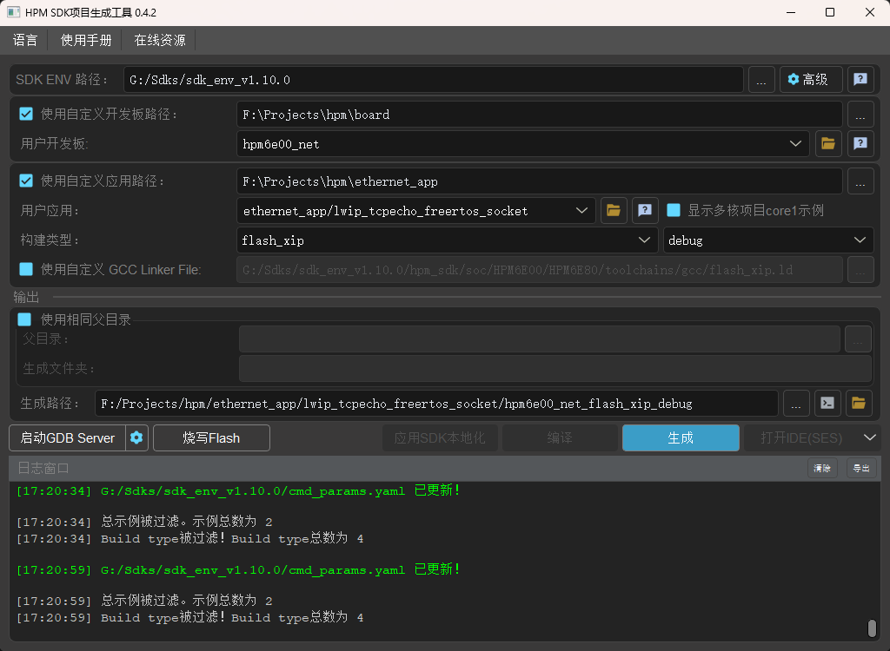
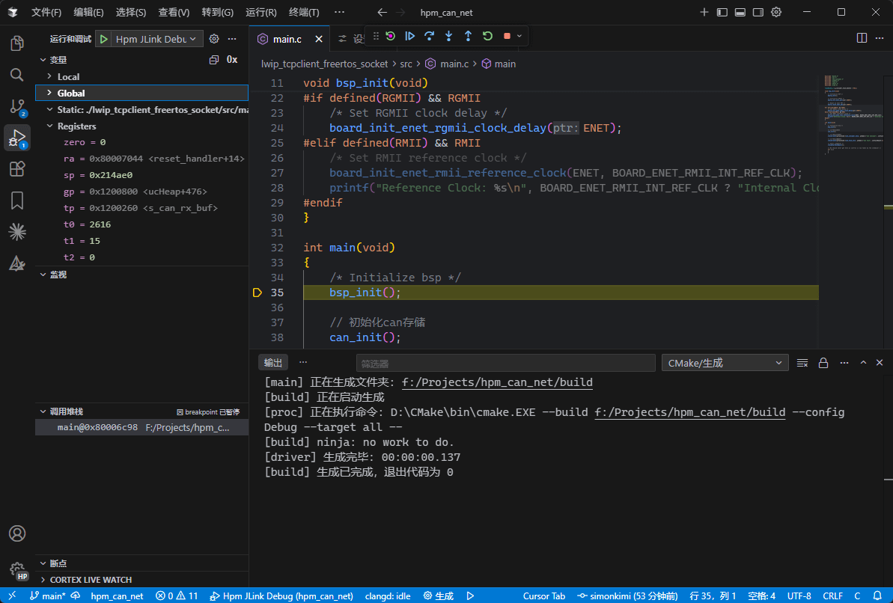
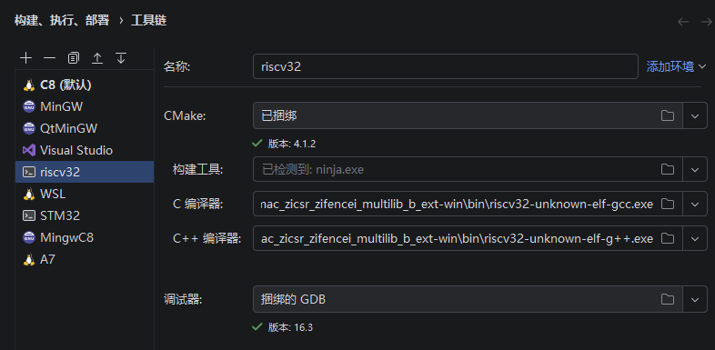
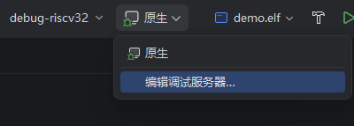
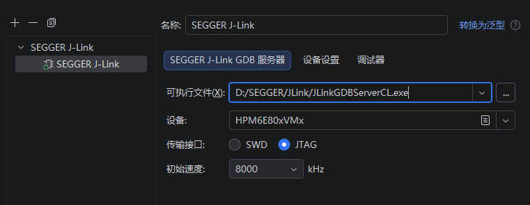
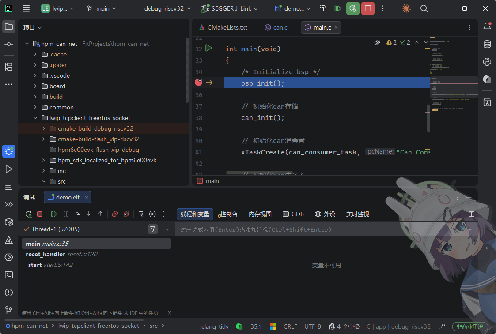

先楫HPM SDK代码本地化与VsCode开发
先楫HPM SDK代码本地化与VsCode/CLion调试与开发开发
本文记录先楫HPM SDK创建项目, 并使用JLink + VsCode/CLion进行调试与开发的过程.
1. SDK代码本地化
1.1 总览
新建独立于SDK的工作目录
选取SDK中的示例项目, 复制到工作目录
选择接近项目的board文件夹, 复制到工作目录, 修改名称和配置
使用start_gui生产工程并进行测试
使用cmake管理工程, 修改CmakeLists.txt文件
代码本地化
1.2 实操
1.2.1 创建工作目录
工作目录为 F:\Projects\hpm , 创建应用路径为 F:\Projects\hpm\ethernet_app
选取demo项目, 以 lwip_tcpecho_freertos_socket 为例, 复制 lwip_tcpecho_freertos_socket 和它的依赖文件夹
project(lwip_tcpecho_freertos_socket_example)
sdk_inc(../ports/freertos/single)
sdk_inc(../ports/freertos/single/arch)
sdk_inc(../common/single)
sdk_inc(inc)
sdk_inc(inc/app)可以看到此demo项目依赖的文件夹有 ports 和 common , 所以需要将这两个文件夹复制到应用路径下
1.2.2 选取board文件夹
在工作目录创建board文件夹, 选取接近项目的board文件夹, 我的板子为 HPM6E00EVK_RevB , 选择 hpm6e00evk 复制到 board 文件夹下
可以自定义修改文件夹名称, 这里修改为 hpm6e00_net , 同时文件夹内的 yml 文件也需要修改为和文件夹同名称
如果需要使用 openocd 进行调试, 需要复制对应的 openocd (hpm_sdk\boards\openocd\boards\xxx.yml) 配置文件到board目录下, 同时要改名为和上面的自定义名称相同
1.2.3 使用start_gui生产工程并进行测试
打开 start_gui.exe , 勾选 使用自定义开发板路径 并定位到 board 文件夹, 勾选 使用自定义应用路径 并定位到 ethernet_app 文件夹, 点击 生成 按钮

1.2.4 代码本地化
生成完毕应用后, 点击 应用SDK本地化 即可将SDK代码本地化到应用路径下, 从而脱离官方SDK的束缚
2. CMake配置
选择应用目录下的 CMakeLists.txt 文件, 添加以下内容
# 添加board文件夹搜索路径
set(BOARD_SEARCH_PATH "${CMAKE_CURRENT_SOURCE_DIR}/../../board")
# 生成compile_commands.json文件
set(CMAKE_EXPORT_COMPILE_COMMANDS ON)
# 如果使用ses编辑器, 且使用J-Link调试, 添加以下内容可以使ses自动使用jlink
sdk_ses_opt_debug_connection(J-Link)3. VsCode配置
3.1 配置插件
安装插件:
CMake Tools (ms-vscode.cmake-tools)
clangd (llvm-vs-code-extensions.vscode-clangd)
Cortex-Debug (marus25.cortex-debug)
在插件配置中配置cortex-debug插件:
{
"cortex-debug.JLinkGDBServerPath": "D:/SEGGER/JLink/JLinkGDBServerCL.exe", // JLink GDB Server 路径
"cortex-debug.gdbPath": "riscv32-unknown-elf-gdb.exe", // GDB 路径
}3.2 配置VsCode
cmake工具包选择未指定, 用来自动搜寻 (需要保证在环境变量中)
修改 .vscode/settings.json 文件, 配置Cmake和Clangd
{
"cmake.sourceDirectory": "${workspaceFolder}/ethernet_app/lwip_tcpecho_freertos_socket", // 项目源码路径
"cmake.generator": "Ninja", // hpm只能使用ninja生成器
"clangd.enable": true,
"clangd.arguments": [
"--background-index",
"--compile-commands-dir=${workspaceFolder}/build",
"--query-driver=**/*riscv32-unknown-elf*",
]
}3.3 配置调试器
在 .vscode/launch.json 文件中, 配置调试器:
{
"version": "0.2.0",
"configurations": [
{
"name": "Hpm JLink Debug",
"cwd": "${workspaceFolder}",
"executable": "${workspaceFolder}/build/output/demo.elf", // 构建出的elf文件路径
"request": "launch",
"type": "cortex-debug",
"runToEntryPoint": "main",
"servertype": "jlink",
"interface": "jtag",
"device": "HPM6E80xVMx", // 对应的芯片型号
}
]
}随后就可以使用工具栏或者调试栏开始调试

4. CLion配置
Tip | CLion需要较新版本, 否则不支持远程调试, 这里使用CLion 2025.3.3 |
4.1 工具链配置
设置路径: 文件 | 设置 | 构建、执行、部署 | 工具链
配置所需要的 riscv 工具链路径, clion自带的gdb还是很强大的, 所以我选择使用clion自带的gdb, 否则可以使用工具链自带的

4.3 配置调试器
Tip | 如果发现没有远程调试窗口, 则需要到设置 文件 | 设置 | 高级设置 调试器 中勾选 为所有项目启用调试器 |


配置好后, 即可使用CLion进行调试
